マイタウン豊洲
2001年の豊洲は倉庫だらけ。今はマンション・オフィース街
東京メトロ有楽町線やゆりかもめの駅がある豊洲は、日本発のコンビニエンスストア(セブンイレブン)や当時珍しかったフィットネスクラブ（ドゥ・スポーツプラザ）がある街です。又、石川島播磨重工業(IHI)発祥の地でもあります。
IHIが経営不振から所有地を手放し始めてから、この土地に多くのビルが建ち始め倉庫街からマンション街・オフィース街へと豊洲は大きく変わりました。
大学(芝浦工業大学豊洲校)もやってきました。大型のショッピングモールも2つも出来ました。ゆりかもめの駅にもなりました。
このコーナーで紹介した施設、店舗は皆、歩いて10分以内のところにあります。
名称のリンクをクリックしますと、施設の照会やスーパーのチラシが表示されます。
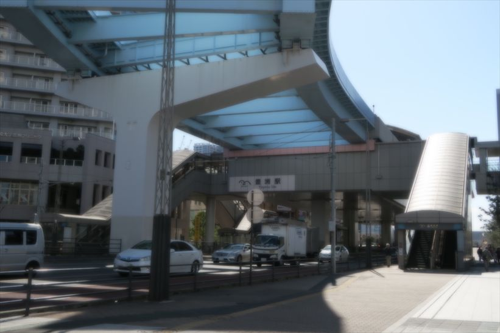
豊洲駅
豊洲駅ができたのは、1988年（昭和63年）6月8日で、ゆりかもめが豊洲駅まで延伸したのは、2006年（平成18年）3月27日で
島式ホーム2面4線の構造を持つ地下駅です。
改札階（地下1階）が東京メトロ有楽町線でホーム階（地下3階）の間にはコンコース階（地下2階。売店はこの階にある）があります。、
2階はゆりかもめの駅でシビックセンター(旧豊洲文化会館)へつながっています。
写真の上のゆりかもめは、ここで切れていて非常に不細工な形となっています。
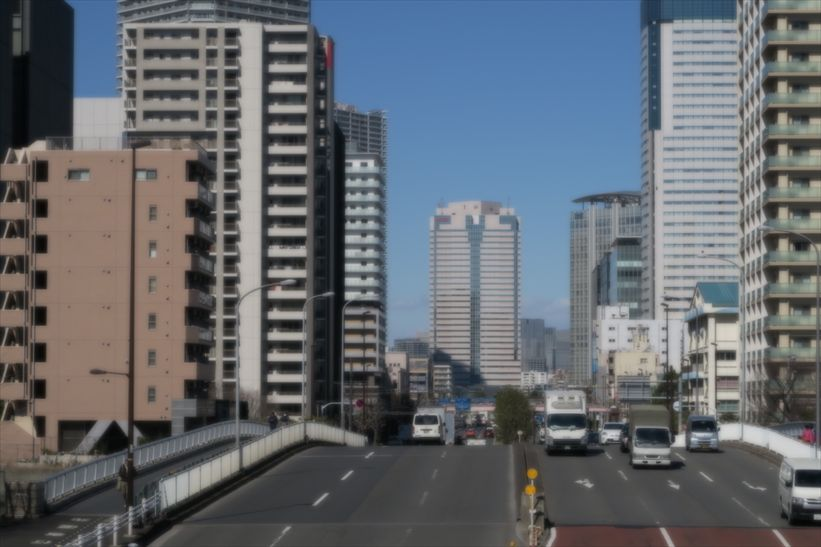
豊洲駅近辺
ちょっとした構造ビル街です。朝夕はビジネスマンの出勤・退社で歩道は人で満員状態です。特に、朝は、駅からの人が多くて、地元に住んでいる人が駅へ歩きずらい状況です。
豊洲は運河の街です。区画での埋め立ての間が運河(海)になっていて、橋でつながっていますが、この写真の手前も橋で、イオンから豊洲駅方面の写真です。
この道路は晴海通りで、東京マラソンにコースになっています。豊洲駅の方から、こちらへと走り抜けます。
11時から駅前の豊洲らーめん店の前で、先着200名におぜんざいが振舞われます。
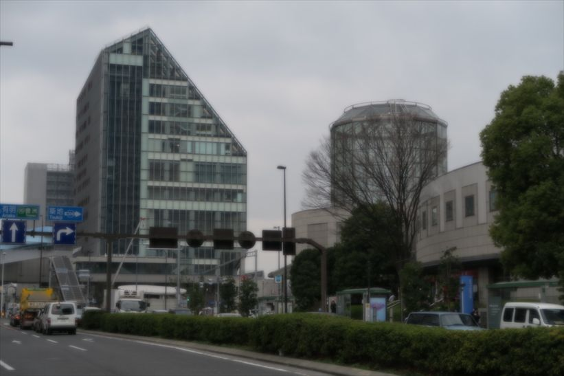
豊洲 シビックセンター
以前の文化センターが新しくなりました。出張所、文化センター、図書館等の機能を備えた複合施設です。 ３階の豊洲特別出張所では、通常の出張所機能に加え、戸籍届書の受付や子育て支援関係の業務を行っています。 又、南部地域にお住まいの高齢者及びその家族等の総合相談窓口を豊洲長寿サポートセンターとて行っています。9～11階に豊洲図書館があります。 図書館のベランダでは飲食が可能です。
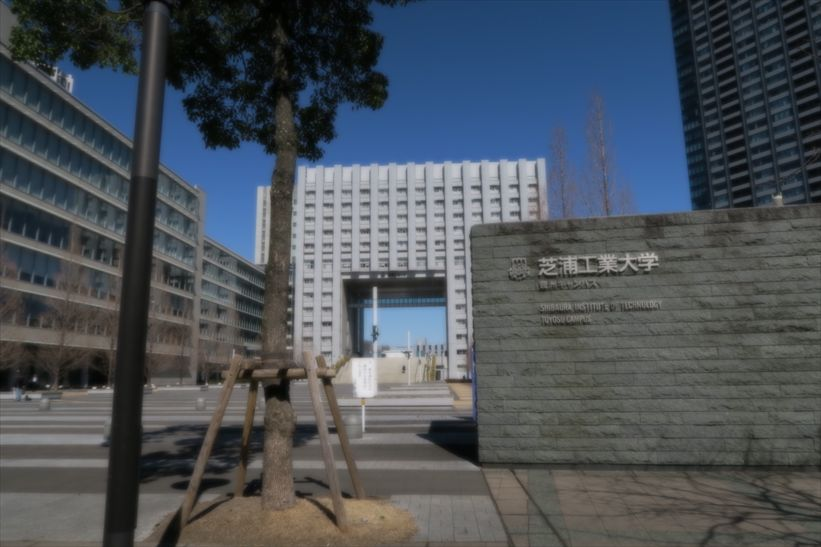
芝浦工業大学 豊洲キャンパス
2006(平成18)年に誕生しました。工学部(3・4年生)と理工学研究科があります。2013（平成25）年9月には、「芝浦工業大学ロボティクスコンソーシアム」の拠点として「ロボティクス研究スクエア」を開設しました。
芝浦祭は毎年11月4日の「創立記念日」の前後に行われる大学祭で、豊洲キャンパスで開催されます。
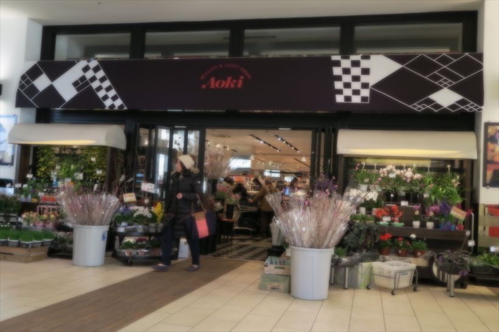
フードストアあおき 東京豊洲店
静岡県沼津市の高級フードストアでアーバンドックららぽーと豊洲の別館(ANNEX棟)に入っています。
かなり広く、品揃えもしっかりしていて、ハイクオリティで個性的なモノも多く、商品の陳列がとてもステキで、店内散策するだけでワクワクします。
時々、特選丸大豆醤油の特売をします。キャッチフレーズは「食生活」をもっと楽しく、もっと新しく、フードストアあおきならではの質の高いおいしさをお届けしますかな?
営業時間は、10：00～23：00
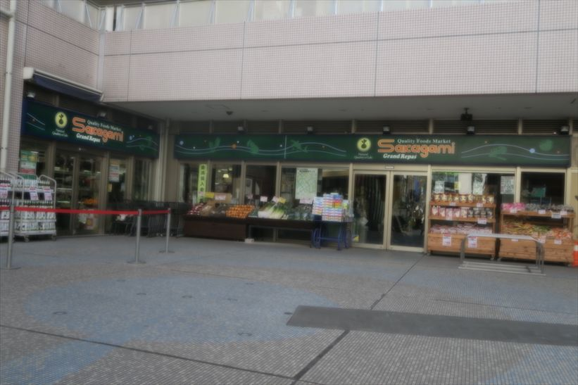
スーパーサカガミ 豊洲店
東京都墨田区本所が発祥のスーパーです。豊洲駅前の高層マンション・シェルタワーの一階にあります。 2006(平成18)年オープンです。決して安くはありませんが品物のよさで売っています。PB商品もありますが店舗は狭いです。 毎週、月曜日の夕方は、店頭(シェルタワー中庭)に野菜等々を広げています。ポイントカード名は「サカガミクラブカード」。
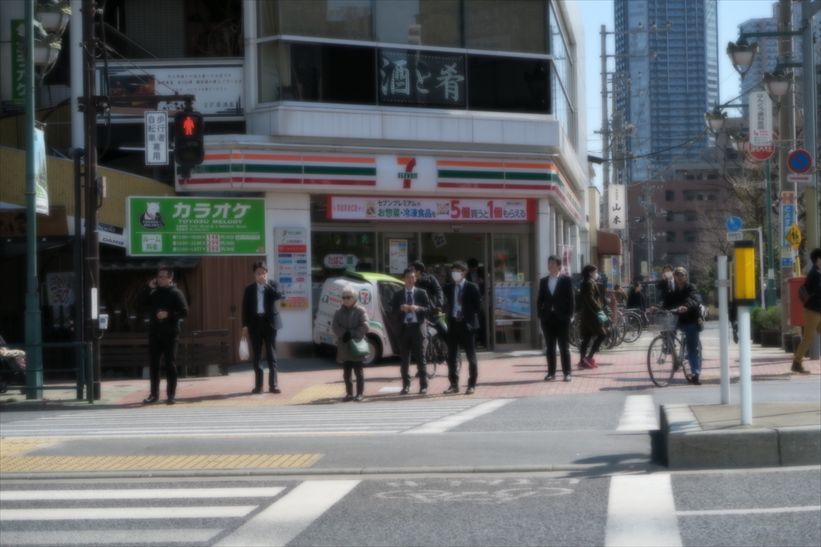
セブンイレブン 1号店
1974年に開業した日本初のコンビニ1号店は「セブン－イレブン豊洲店」です。前身は山本茂商店という山本憲司氏の経営する酒屋さんで2階建て。NHKテレビのプロジェクトXでも照会された1号店です。
最初に売れたのはカウンターのところにあったサングラスとのこと。初日の利用者は約800人。この1号店には当時のダイエー社長・中内功氏など他社スーパーの幹部もよく視察に訪れていたようです。今では、カウンターに4人ぐらいで忙しそうにレジをしています。
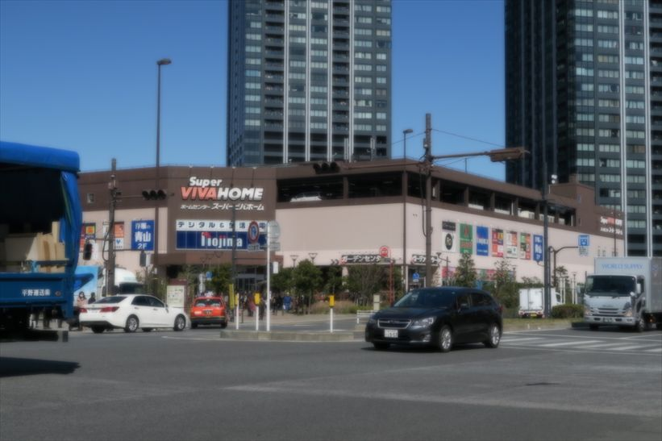
スーパービバホーム 豊洲店
DIYからリフォームまで手広く扱い、LIXILが経営しています。1階がスーパービバホームで奥にはペットショップもあり、2階は文化堂、イエローキッチン等々が
入っています。通販もしています。
店舗の前では豊洲で一番広い敷地で園芸品を扱っています。見ていて楽しくなります。
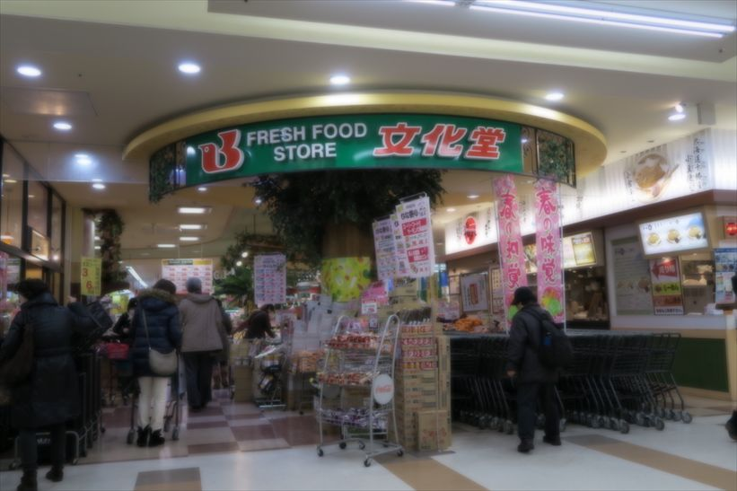
文化堂 豊洲店
文化堂は品川区荏原中延に菓子専門店創業及び開業です。東京と神奈川を拠点にしているスーパーです。豊洲店は2005(平成17)年、スーパービバホームの2階にオープンです。毎週日曜日は、9時開店の日曜市です。 先着200名ですがお花をもらえます。肉の特売の時は、特に大勢の人が来店し混雑します。お気をつけ下さい。時々ですが土曜日に、「コストコフェア」をし、ピザ、プルコギ、コチュジャン 等を売っています。
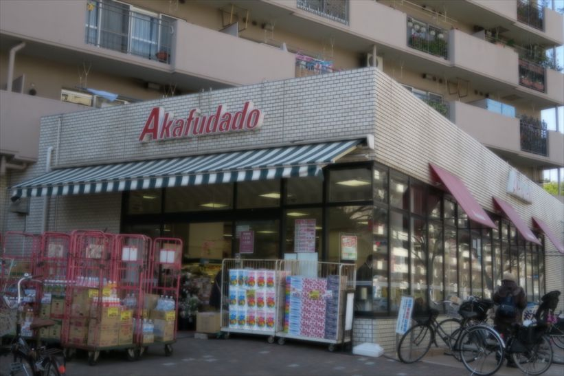
赤札堂 豊洲店
1917年10月に東京門前仲町深川に赤札堂洋品店として創業。当時のキャッチコピーは「三等切符で一等のお買い物」「同じ品なら必ず安い」とのこと。
豊洲店は、マンションの1階にあります。ここの店員さんは、豊洲では、No.1のサービスをしてくれます。こちらが何か探していますと、
店員さんから「何かお探しですか?」と聞いてくれます。
他の店では、このように声をかけてくれることはありません。
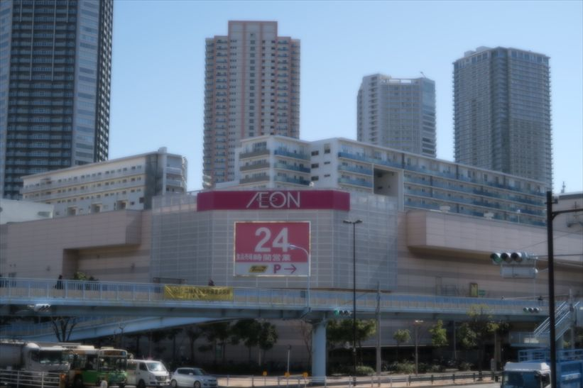
イオン 東雲店
東雲の6棟の高層マンションの正面にあります。大きなショッピングモールです。2階は日用雑貨とフードコートになっています。 毎週火曜日は火曜市で、大きな玉ねぎが1個28円です。フードコートには、マクドナルド、31アイスクリーム、ミスーナッツ、リンガーハット等々が入っています。
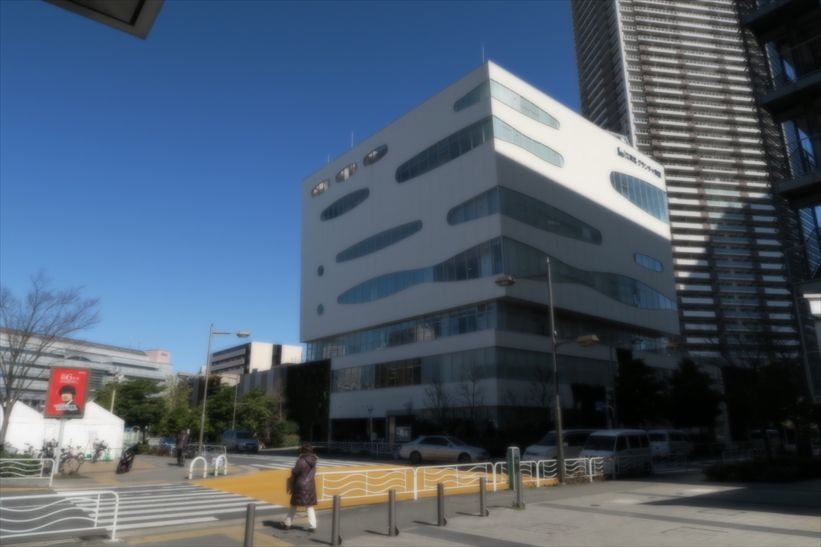
グランチャ 東雲
60歳以上の年寄りと子供の憩いの場。プール、ジムがあります。又、いろいろな教室も開催されます。例えば、「男の料理」、「初めてのデジカメ」(※2016/2 ～3月、計4回。講師:塩澤一洋先生)、「英会話」、「ヨガ」。